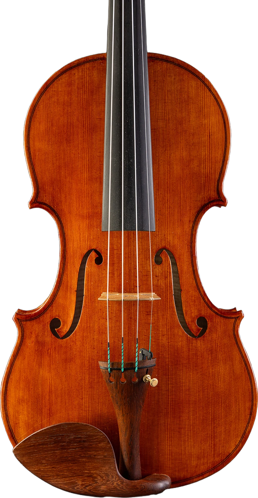
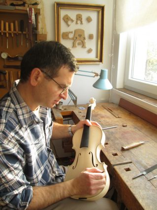

Stepan Demirdjian
Степан Демирджиян
Лютиер · ПловдивПревъртете

За мен
Майстор-лютиер от Пловдив, посветен на класическата традиция и съвършения звук. С над трийсет години опит в изработката на цигулки и виоли, както и в цялостната реставрация на струнни лъкови инструменти и техните лъкове.
Инструменти
Контакти
Всеки инструмент се договаря по телефон или имейл — както Ви е удобно.